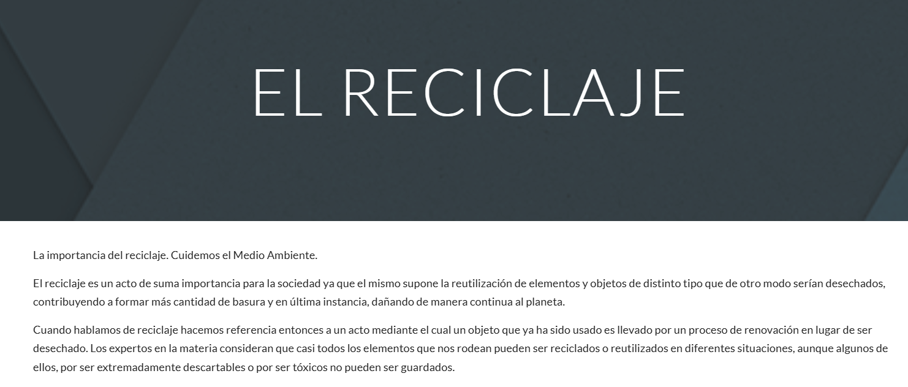

8. PÁGINAS WEB CON GOOGLE SITES
8. PÁGINAS WEB CON GOOGLE SITES
Google Sites es un editor visual de página web online. Su manejo es muy sencillo, las páginas creadas quedan almacenadas en nuestro Google Drive y son publicadas en la web automáticamente, sin necesidad de contratar un host.
En el siguiente vídeo de YouTube se explica cómo crear y diseñar una página web con Google Sites.
📝 ACTIVIDADES (12)
- Construye una página web compuesta por al menos 3 subpáginas con Google Sites.
- Elige un tema que te guste y busca información de Internet.
- Inserta títulos, párrafos, imágenes y vídeos de Internet.
- Cuida el diseño y la calidad de la página.
📝 ACTIVIDADES (12)
Imagina que eres un diseñador o diseñadora web. Un cliente ha creado una página web básica con Google Sites y te la manda para que tú le mejores el diseño de la misma (Pulsa en la imagen para abrirla):
- Crea una página nueva de Google Sites y ponle de nombre "El reciclaje".
- Copia el texto de la página original a la tuya y justifícalo.
- Señala partes del texto en negrita, cursiva, subrayadas, con colores, etc.
- Cambia el tema de la página.
- Señala los títulos.
- Incluye imágenes alusivas al tema.
- Incluye algún vídeo de YouTube.
- Incluye un carrusel de imágenes.
- Inserta un índice.
- Al final de la clase, comparte tu página con tu profesor.
📝 ACTIVIDADES (14)
Imagina que eres un diseñador o diseñadora web. Un cliente ha creado una página web básica con Google Sites y te la manda para que tú le mejores el diseño de la misma (Pulsa en la imagen para abrirla):
- Crea una página nueva de Google Sites y ponle de nombre "Robótica".
- Copia el texto de la página original a la tuya y justifícalo.
- Señala partes del texto en negrita, cursiva, subrayadas, con colores, etc.
- Cambia el tema de la página.
- Señala los títulos.
- Incluye imágenes alusivas al tema.
- Incluye algún vídeo de YouTube.
- Incluye un carrusel de imágenes.
- Inserta un índice.
- Al final de la clase, comparte tu página con tu profesor.
Obra publicada con Licencia Creative Commons Reconocimiento Compartir igual 4.0